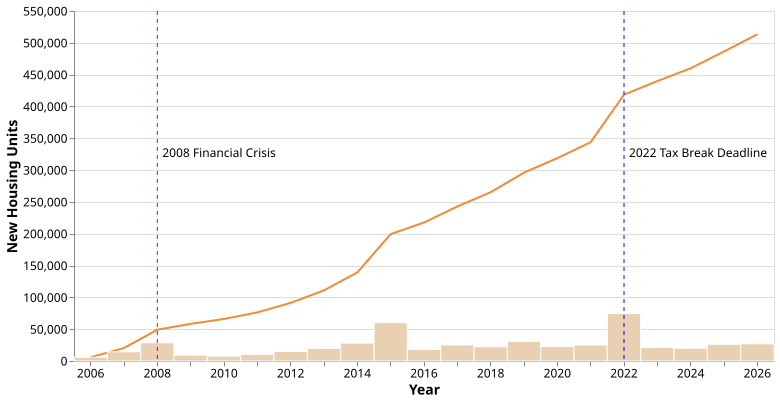
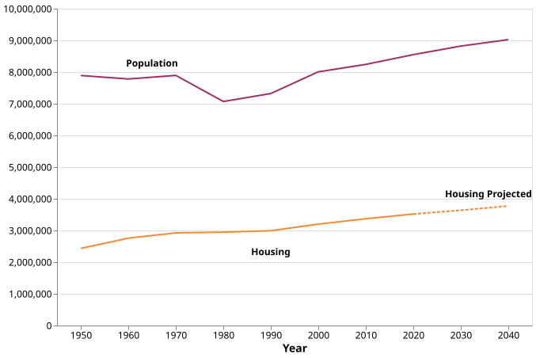
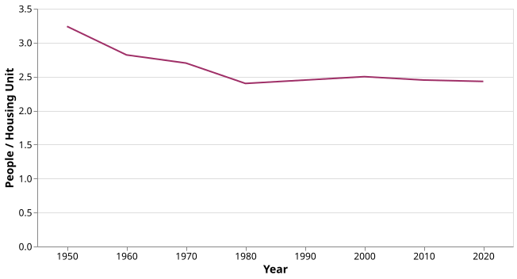
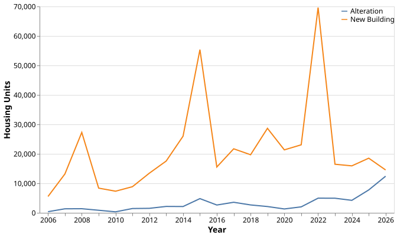
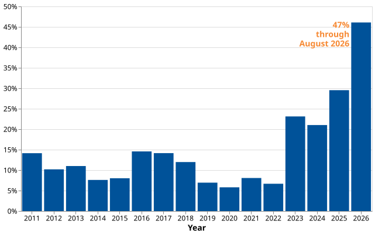
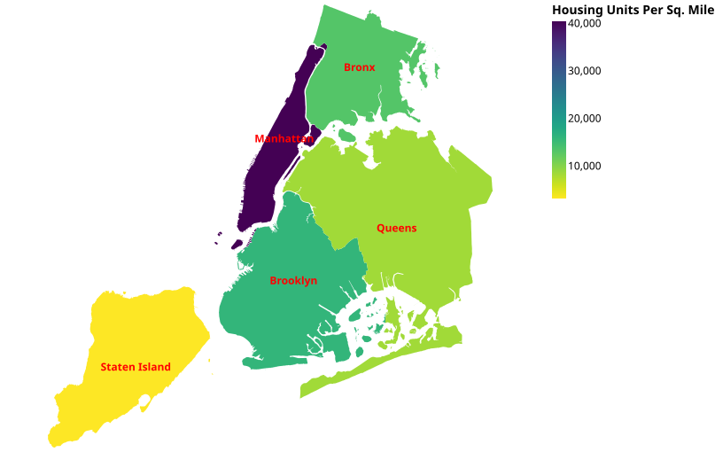
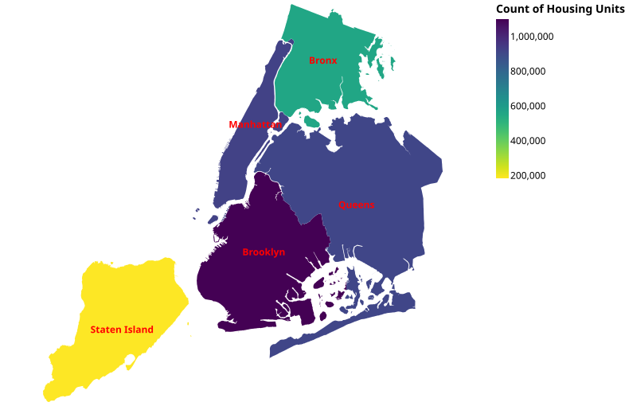

Housing in New York City: Visualizing new and historic housing availability in juxtaposition to population growth
Data Visualization for Policy Analysis
Muhammad Faizan Imran
New York City is the most populated city in the US and one of the most populous in the world. That has led to the city running consistently into housing problems - with the city boasting some of the highest rents anywhere in the world. With a stable population growth over the past decades not being matched with enough new housing built - the gap between population and housing is pushing people out and away from the city.
We visualize below the number of new housing units added in New York over that last two decades. There was a decline in new housing added after the 2008 financial crises. We also note a couple of years that add over 50,000 new housing units; both of these instances were due a tax break deadline approaching.
Cumulative new housing units added since 2006
The line chart is giving a cumulative picture while the bars represent how much was added in each year

Comparing this with the population growth that the city has seen from 2000
to 2020, the city's population rose by over 550,000 people. We can visualize
how the gap between housing units and total population in the city have
looked like historically and what we can project given the current rate
at which housing is being added.
We use a linear regression to projection the housing for 2030 & 2040 Total population of NYC and total housing units available
(1940-2040)
Given this we can also see how many people reside in a single housing unit in the city and how that ratio has changed since 1950 and what we find is that there was a gradual decrease in the number of people living in a single housing unit from 1950-1980 but the ratio has since stagnated at around 2.5 people per home.
Ratio of people per housing unit

We can zoom in further using the Department of City Planning's (DCP) housing database and track how the city has been keeping up with the housing demand. The city has two main levers at its disposal: a) giving tax breaks to real estate developers - something we notice in the first figure and b) using already existing infrastructure and converting it for residential use. As new housing construction takes a long time to be realized and start housing folks - residential conversions are a quick policy fix.
Driver behind new housing units being added year over year

The current NYC adminstration's main policy agenda is affordabitiy and to this end the city is taking on the costs being driven by housing. With the city's Rent Control Guidelines Board passing a rent freeze on around 2 million units for the next two years - on the supply side the city is focusing on increasing housing supply and one of the fastest way to do that is through conversions between city owned buildings that already exit and converting them for residential use. This short term lever is something that the city seems to be relying on a lot, just until August of this year, almost 50% of all new housing added in NYC has come through conversions or alterations on already existing buildings.
Conversions/Alerations as Percentage of New Housing Units Added

Lastly, we can look at housing by boroughs and what we find is that Brooklyn has the highest number of total housing units while Manhattan has the most per square mile. What is evident through both the charts below however, is that Staten Island is lacking behind the four other boroughs by a lot given how much area it has. A reason for this could be that there is more demand for housing in the other boroughs but this is something that the city could intervene in and try to incentivize more housing construction in Staten Island as well.
Housing units per square mile by borough

Total housing units by borough
